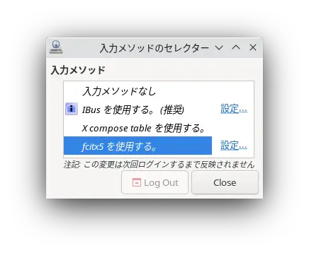
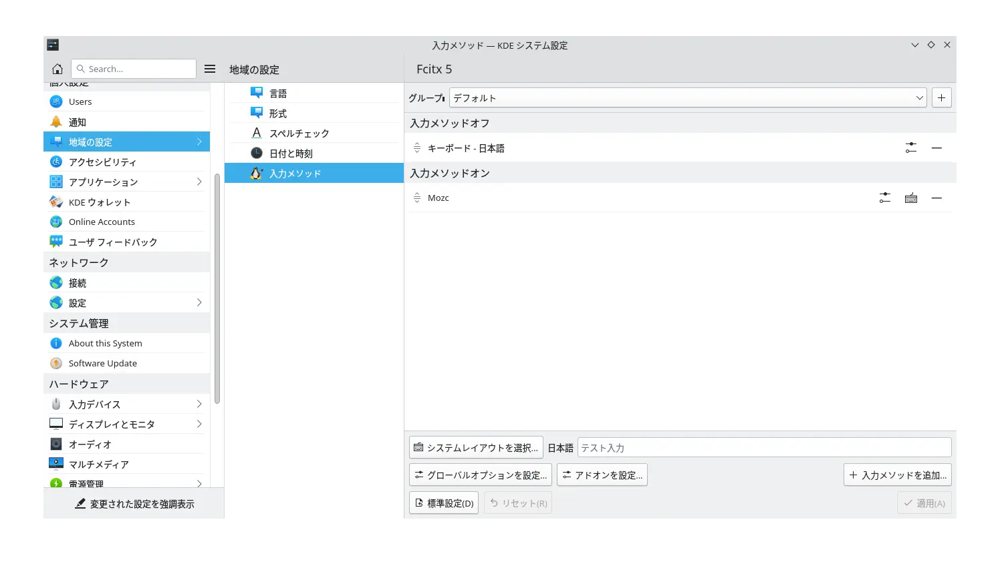
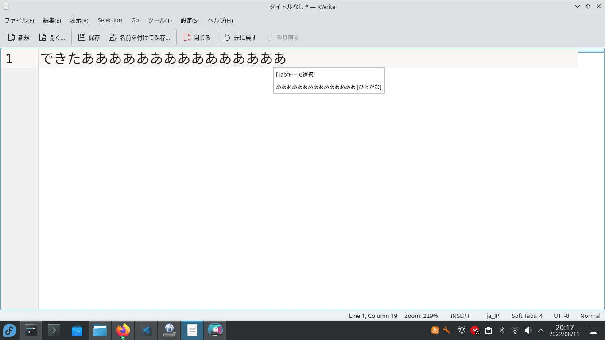

投稿日:2022/8/11 最終更新日:2025/11/29
Fedora36 KDE Plasma Spinをインストールしたら、
Ibusがインストールされているのに日本語入力ができなかったので、Fcitx5で日本語入力する方法を紹介します。
インストールしたてだと沢山の更新プログラムがあるので
Discover > Up to date でインストールし、再起動します。
あなたはシステム管理者から通常の講習を受けましたね？？？？？
終わったら再起動します。
アプリケーションランチャー > 設定 > 入力メソッドのセレクター を開きます。
「fcitx5を使用する。」を選び、再ログインします。
もう一回開いて、設定を押します。
画像のように、
入力メゾットオフ
キーボード 日本語
入力メゾットオン
Mozc
と設定します。
グローバルオプションを設定...から、入力メゾットの切り替えに全角半角キーを設定します。
Windowsみたいな感じでできるようになったと思います。Ibusはアンインストールしても大丈夫です。
とても良いOSなのでFedora KDE Plasma Spinをぜひ使ってみてください！